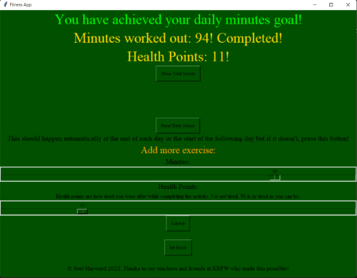
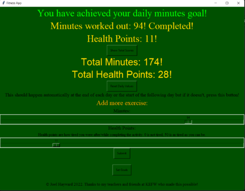
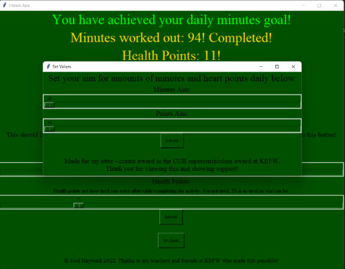

Meet Health Watch
Health Watch is a fitness app for anyone! It allows you to track the amount of minutes you exercise and how tired you felt afterwards.
It is enough to encourage you to exercise without the unnecessary amount of complication other fitness apps provide.
So why should you use Health Watch?
Simple design

The design of the app is very simple, unlike other more complex fitness apps. The simplicity makes it perfect for children or fitness beginners!
The design isn't cluttered, it just tells you what you need to know and uses simple controls that anyone can understand.
Total overview

The app offers a complete overview of your exercise since you started using the app. This is perfect for children and beginners as it shows them just how far they've come without unnecessary complex information.
Set your goals!

This is a must have for every fitness app.
A goal setter helps you to get to the level of fitness that you want to be at and helps you to see your improvement as your goals get higher and higher.
Simple Controls
Just slide the sliders and push the buttons. That's all there is to it!